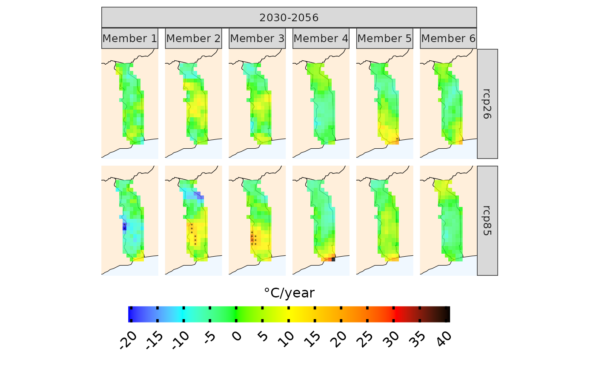

trends.RdCompute multivariate linear regression and linear regression through design-based inference
trends( data, bias.correction = FALSE, uppert = NULL, lowert = NULL, season, consecutive = FALSE, duration = "max", intraannual_var = FALSE, historical = FALSE, n.sessions = 1 )
| data | output of load_data |
|---|---|
| bias.correction | logical, whether to perform bias.correction or not |
| uppert | numeric of length=1, upper threshold |
| lowert | numeric of length=1, lower threshold |
| season | numeric, seasons to select. For example, 1:12 |
| consecutive | logical, to use in conjunction with lowert or uppert |
| duration | character, either "max" or "total" |
| intraannual_var | logical, whether linear regression is applied to annual variability, measured as standard deviation |
| historical | logical, whether to visualize trends for the historical period or projections |
| n.sessions | numeric, number of sessions to use, default is one. Parallelisation can be useful when multiple scenarios are used (RCPS, SSPs). However, note that parallelising will increase RAM usage |
list with SpatRaster. To explore the output run attributes(output)
exmp <- load_data(country = "Togo", variable="pr", years.hist=1995, years.proj=2030:2055, path.to.data = "CORDEX-CORE",domain="AFR-22", aggr.m="sum")#>#> ✔ Accessing inventory [3.5s]#>#> ℹ Downloading CORDEX-CORE data (18 simulations). This might take a while. Using…#> ✔ Downloading CORDEX-CORE data (18 simulations). This might take a while. Using…#>#> ℹ Downloaded 6.71 MB#> ℹ Binding members and checking temporal consistency#> ✔ Binding members and checking temporal consistency [45ms]#>#> ℹ Precipitation has been converted into mm/daytrd_exmp <- trends(exmp, season = 1:12, historical=F, intraannual_var=F)#> ℹ trends, projections, season 1-2-3-4-5-6-7-8-9-10-11-12. Calculation of yearly increase in total pr#> ℹ Processing rcp26#> ℹ Applying multivariate linear regression to the ensemble. Global test statisti…#> ✔ Applying multivariate linear regression to the ensemble. Global test statisti…#>#> ℹ Processing rcp85#> ℹ Applying multivariate linear regression to the ensemble. Global test statisti…#> ✔ Applying multivariate linear regression to the ensemble. Global test statisti…#>#> ℹ Processing rcp26#> ℹ Applying linear regression to each ensemble member. P-value calculated using …#> ✔ Applying linear regression to each ensemble member. P-value calculated using …#>#> ℹ Processing rcp85#> ℹ Applying linear regression to each ensemble member. P-value calculated using …#> ✔ Applying linear regression to each ensemble member. P-value calculated using …#>#> ℹ Visualizing individual members#> ℹ Plotting#> ✔ Plotting [1ms]#>